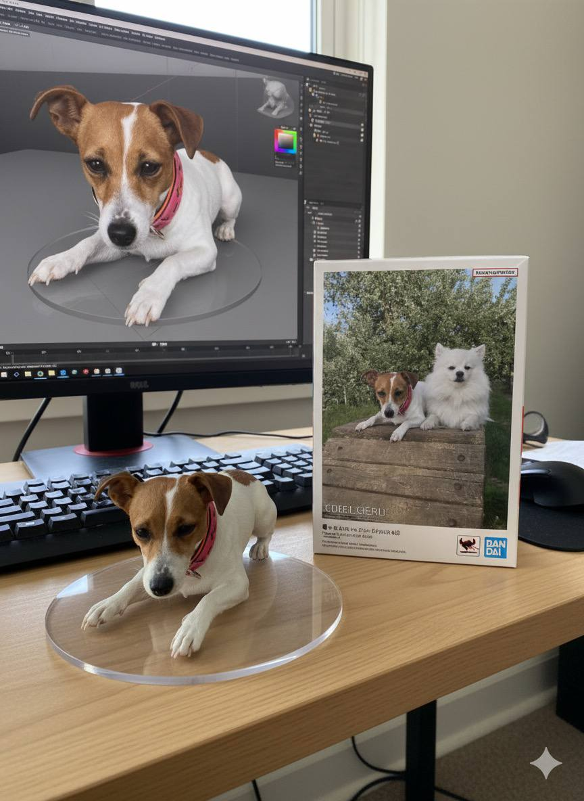
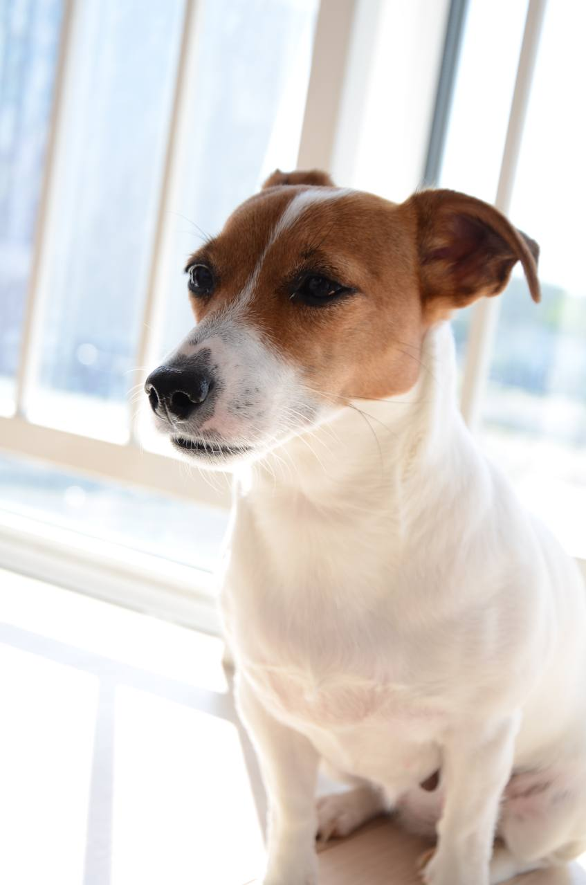
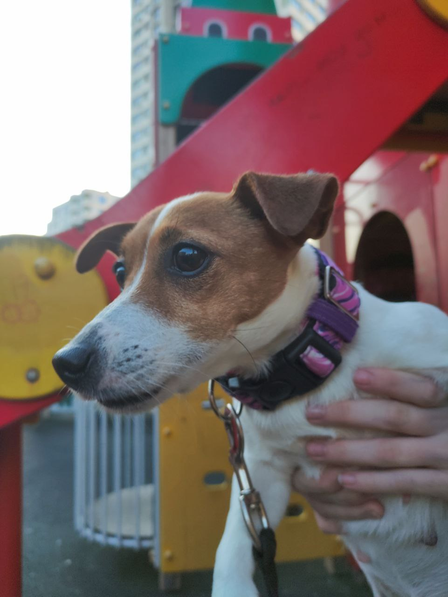
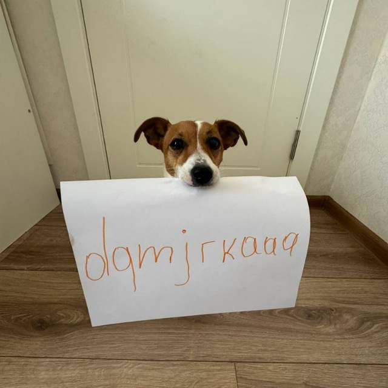

МОМЕНТЫ ЖИЗНИ





Искусство Безмятежности
**Кэнко** — это не просто собака, это целая философия. Рожденный с душой мудрого философа, он вносит покой и гармонию в каждый свой день. Его взгляд глубок, а движения грациозны, как течение горного ручья. Он ценит тишину утра, мягкий свет и долгие прогулки, где можно вдыхать ароматы земли.
С японского "Кэнко" переводится как "здоровье", и он живет, олицетворяя собой баланс, силу и внутреннюю красоту. Его любимое занятие — медитация на солнечном пятне, и, конечно же, самые нежные обнимашки.